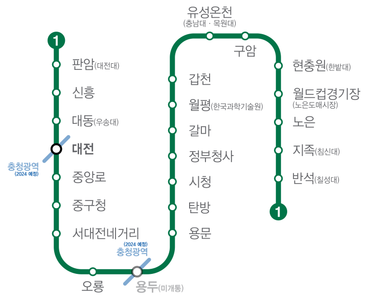

대전 지하철 노선도
사용자가 우산을 빌린 지점이 아니더라도
대전 지하철역
과
쓰슈 협업지점 어디에서든
우산 반납이 가능합니다.

서비스 안내
쓰슈 공유우산 서비스를 안내해드립니다.
이용안내
이용대상
대전시민 누구나
대여시간
05~24시
반납시간
24시간
※ 이용 성수기인 3월부터 11월까지는 24시간 운영합니다.
요금안내
기본 사용료
1시간 무료
추가 사용료
30분당 500원/1일 1회당 최대 추가 사용료는 5,000원
* 1시간 내 반납 후 재대여하면 추가요금 없이 반복 이용 가능